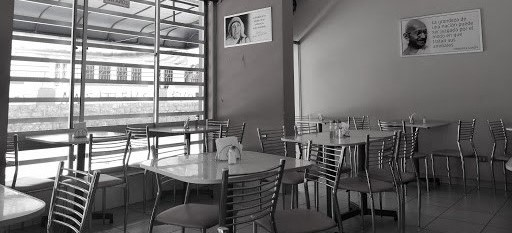

Bienvenidos a nuestro restaurante vegano! Un lugar donde la comida y la conciencia se unen para ofrecer una experiencia única en cada plato. Desde el primer día, nos hemos comprometido a utilizar solo ingredientes frescos y locales para crear platos sabrosos, nutritivos y creativos que sorprenden y satisfacen a nuestros comensales. Hemos trabajado incansablemente para desarrollar un menú variado y emocionante, que ofrece opciones tradicionales y otras más innovadoras, con un enfoque en la calidad y la sostenibilidad.